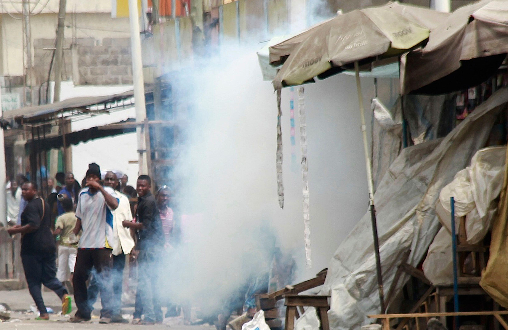
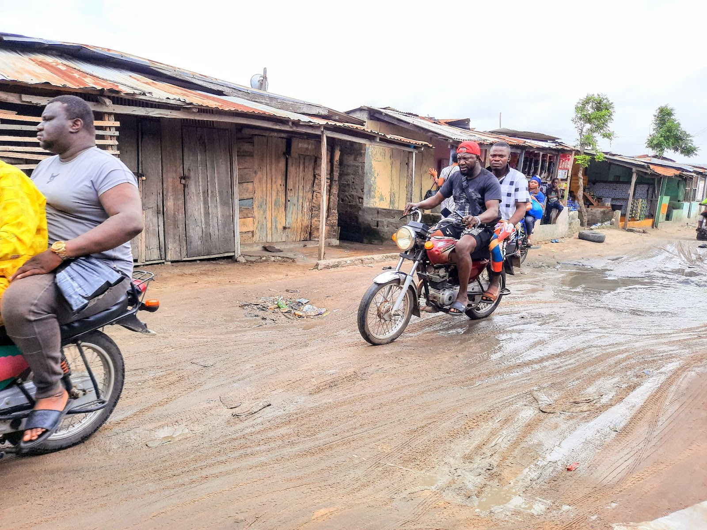
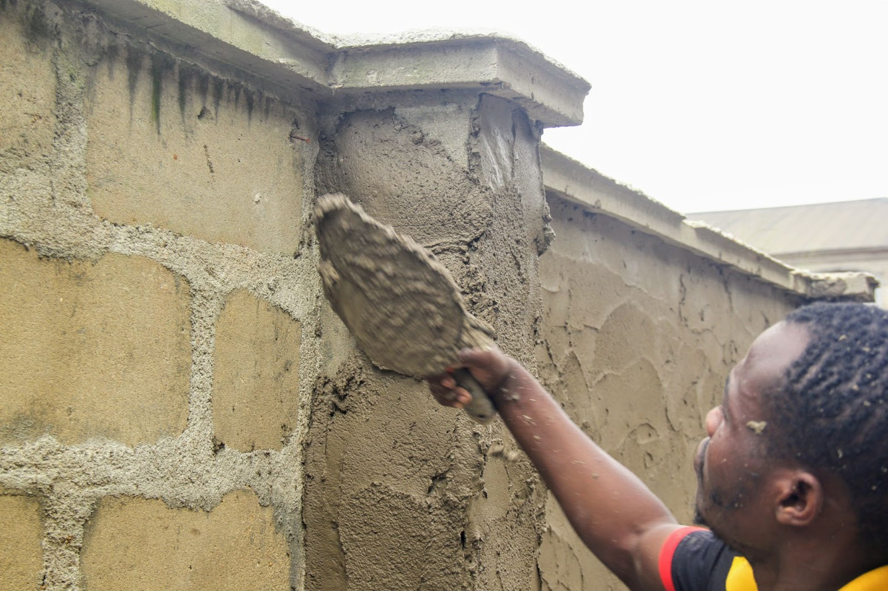
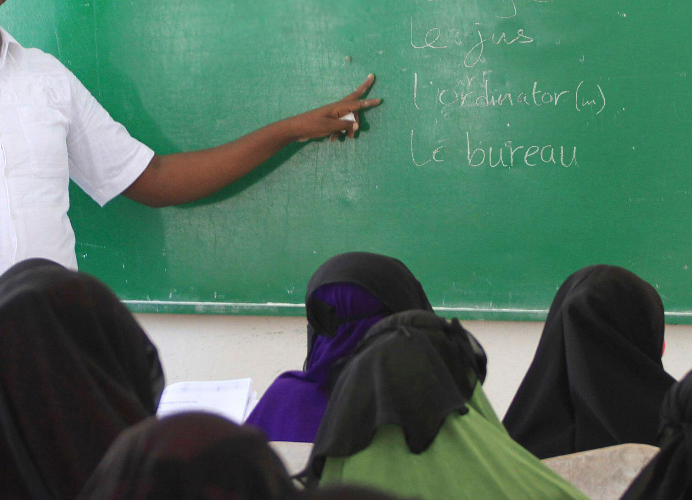
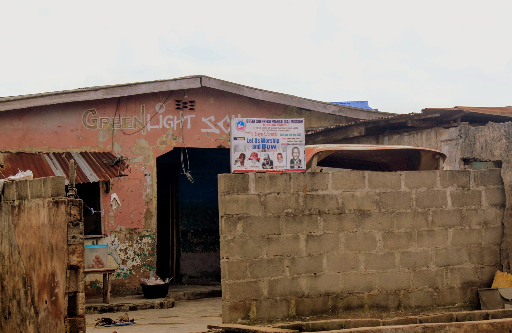
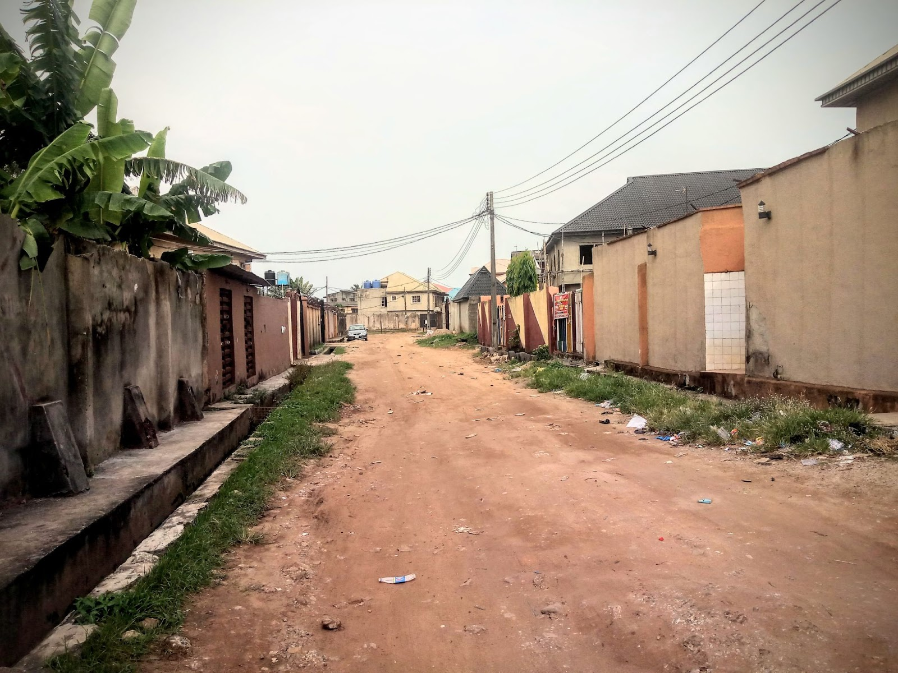

Post-Election Violence Displaces Kelvin in Lomé
Kelvin is from the town of Aného, located in southeast Togo in Lacs Prefecture, Maritime Region. He was in his sophomore year at the University of Lomé during the Presidential elections on April 24, 2005. The elections took place on a Sunday, and violence broke out in the Togolese capital after a winner was announced. 
Kelvin got a call from a friend early on the following Monday asking him to leave campus because votes were not counted and fighting had led to the deaths of some people. Because movement was expected to be impossible by the next day, Kelvin was advised to leave immediately. He left campus and headed out of the capital by 4 AM Monday morning.
The Journey out of Lomé
"It was hell because there were no buses. By that time, because of the crisis, everywhere was blocked and people were burning tires everywhere."
A friend took Kelvin on his bike to the Mono River between Togo and Benin, about 70 km east of Lomé, and dropped him there. 
Crossing the Mono River and Seme Border
He crossed the river to get to Benin. He didn’t pass through the land border for safety reasons. After crossing the Mono River into Benin, Kelvin took a bus to the Seme border. His border-crossing experience was terrible.

When he arrived at the Seme border, he didn’t have enough money to cross. He had to sell the only possession of value that he had with him – his Nokia 3310 mobile phone. The man that carried him to Seme bought the phone from him, paying for it in CFA, which Kelvin then had to convert to Naira. He had contacts in Nigeria, so he called them to tell them he was coming.
"I had some family members who live in Nigeria. I called them and they gave me directions. They told the driver I met at Seme to drop me at Mile 2 - because that was my first time coming to Lagos - and that I would see flags (there are flags of Togo, Benin, Ghana and so on), so he dropped me there and I waited until they came to pick me and took me to Ikotun. It was very late in the night."
Bricklaying to Teaching
"When I came as a foreigner in a new land, there was no job, and my English was not that fluent, so I had to stay indoors a lot." 
Kelvin stayed in Ikotun, a neighbourhood on the mainland, located in Alimosho Local Government Area in Lagos State. Kelvin struggled to find a job because he was not fluent in English, so he stayed home for months. He began to try to make friends in order to find opportunities, befriending a group of bricklayers and working two gigs on construction sites. He eventually got the contact of a teacher at Queen Maris College in Ikotun who was looking for someone fluent in French to help with a French language book publication. Kelvin started working with him, and they published a book called Ça y est which means "That's it." The teacher introduced Kelvin to a few schools, and Kelvin started to teach French part-time.
Finding Work in Other Parts of the City
 Kelvin left the Ikotun area and moved to Ago and continued to tutor at other schools there. Eventually, he became a full-time French teacher.
After that, he organized and taught a series of seminars in different locations, some at the University of Lagos (UNILAG), where he received a certificate. He also met people in Alausa who work at the West African Examination Council Office and those contacts enabled him to access some of the schools he worked at.
"Being a foreigner teaching in a school was not easy. I had some problems fitting in. It has not been easy. Knowing you are a foreigner; many people don’t value where we are from because they don’t really know much about it. So far so good, I have not had a major problem."
Stuck in an Economic Downturn
"From 2006 when I started teaching, the economy was okay because then, if you took N1000, it could give you 5000 CFA but today, it is hell because since that time, my employer has not been increasing my salary. I have been earning the same amount, the same currency to change and when you change it to CFA, it’s like you have nothing on top. Before, when I changed Naira to CFA and took it home to Togo, it meant something, but now nothing is moving at all." Because of the downward spiral of the Nigerian economy and the high cost of travelling and border crossings, Kelvin has been unable to travel home since 2017. Instead of spending the money to transport himself, he preferred to send the money home to Aného. "I prefer to send money to Togo because if you look at what it will cost to go back to see the family, the best thing to do is to send money instead. The transport fare has increased, coupled with the bad road now from Mile 2 to Seme and the stress on the road from officers. It is hell. So, I think changing money and sending it to Togo is preferable than going there myself."
Community in Isolo
 Kelvin is a member of Great Shepherd Evangelical Mission, a Togolese church in Lagos. It is a very large church that has different branches and headquarters in Oshodi and Surulere. The branch he attends in Isolo is small but very diverse.
"Some of our people married Yoruba and Igbo people so they are also members of the church, so the church does not preach in our language alone. I will say I am in that community, apart from that, there is no other community I belong to apart from the area I live in."
Making Isolo Home
 Kelvin feels at home in his Isolo neighbourhood, Oke-Afa. "There's no discrimination here, we do things together. Where I live are Yoruba and Igbo people, and we do things together, so I feel at home. I can talk to anybody here because they know me in this environment. I have worked in the schools in the neighbourhood where I help 3 to 5-year-old students as a tutor, so I move freely. I don’t feel like a stranger."
Kelvin came to Lagos as a single person, and then met a Togolese woman in Ikotun who became his fiancée. She helped him to settle in, assisting him with drafting his CV and application letter in English. "We finally got married. When things are difficult, she reminds me that this is Lagos, this is Nigeria, and this is how things work here - and this helps me to stay focused. We have children now."